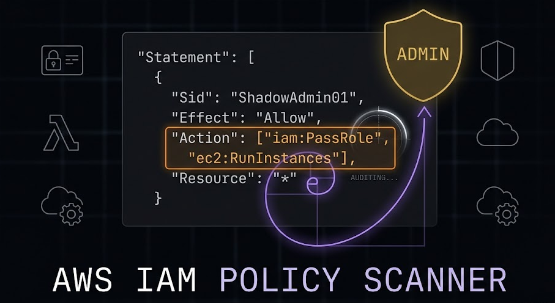

Résumé du projet
Développement d'un outil d'analyse statique capable de détecter 21 méthodes d'escalade de privilèges dans les politiques AWS IAM. L'objectif est d'identifier les configurations permissives ("Shadow Admins") qui permettent à un utilisateur restreint de devenir administrateur.
Logique de l'algorithme
L'intelligence de ce scanner repose sur une Analyse de Chemin (Path Analysis). Contrairement à un simple filtrage par mots-clés, l'outil analyse les dépendances entre les permissions. Par exemple, il ne lève pas une alerte critique pour un simple iam:PassRole, mais il identifie si cette action est combinée à une capacité de création de ressource (EC2, Lambda, Glue) permettant d'extraire des jetons de session via le Metadata Service (IMDS).
L'algorithme procède en trois temps : normalisation du JSON (gestion des Wildcards "*"), extraction des déclarations "Allow", puis croisement avec une matrice de 21 schémas d'attaque documentés.

Les 21 Chemins d'Escalade (Rhino Security)
| ID | Vecteur | Logique d'Exploitation | Remédiation |
|---|
Origine de la Recherche
Ce scanner implémente techniquement l'intégralité de l'article de référence de Rhino Security Labs : AWS IAM Privilege Escalation – Methods and Mitigation. L'approche statique garantit qu'aucune donnée de politique sensible ne quitte votre navigateur.